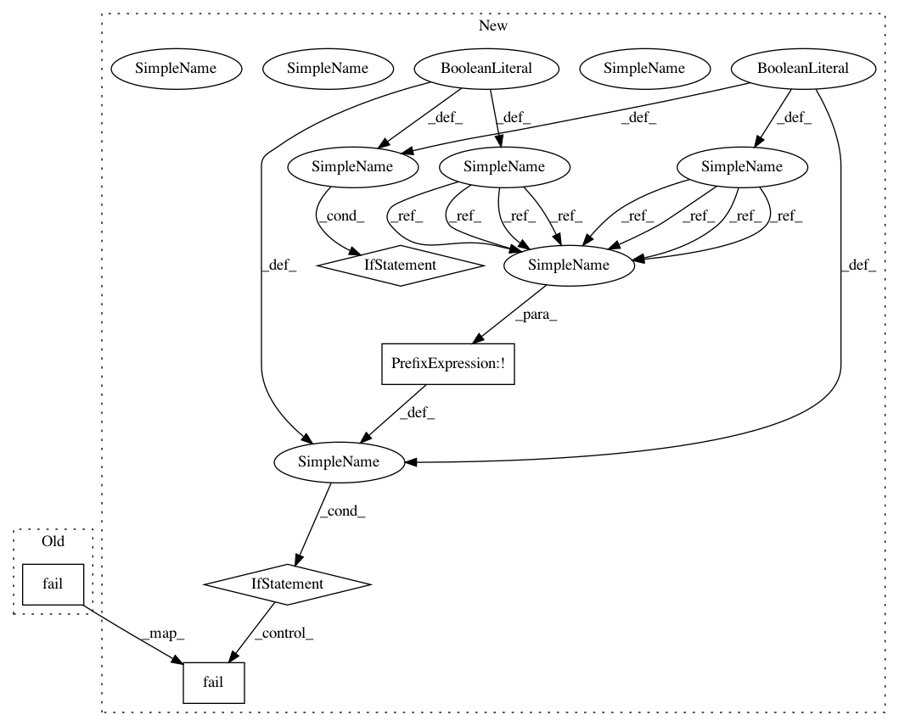

f3bc59666e114d46885de0f7309cc2f42eae4b82,tests/models/test_auto_naming.py,Auto_Naming_Test,test_static_model_auto_naming,#Auto_Naming_Test#,120
Before Change
try:
model_nested_given_repeat_name = nested_static_model(inner_model_name="a_inner_static_model")
self.fail("Failed to detect nested repeat user given names")
except Exception as e:
pass
def test_layer_name_uniqueness(self):
After Change
def test_static_model_auto_naming(self):
print("-" * 20, "test_static_model_auto_naming", "-" * 20)
test_flag = True
model_basic = basic_static_model()
model_basic_1 = basic_static_model()
model_basic_2 = basic_static_model("model_2")
model_basic_3 = basic_static_model()
model_basic_given_name = basic_static_model("a_static_model")
self.assertEqual(model_basic.name, "model")
self.assertEqual(model_basic_1.name, "model_1")
self.assertEqual(model_basic_2.name, "model_2")
self.assertEqual(model_basic_3.name, "model_3")
self.assertEqual(model_basic_given_name.name, "a_static_model")
try:
model_basic_given_repeat_name = basic_static_model("model_1")
test_flag = False
except Exception as e:
pass
if not test_flag:
self.fail("Failed to detect repeat user given names")
model_nested = nested_static_model()
model_nested_1 = nested_static_model(inner_model_name="a_inner_static_model")
self.assertEqual(model_nested.name, "model_5")
self.assertEqual(model_nested_1.name, "model_6")
try:
model_nested_given_repeat_name = nested_static_model(inner_model_name="a_inner_static_model")
test_flag = False
except Exception as e:
pass
if not test_flag:
self.fail("Failed to detect repeat user given names")
def test_layer_name_uniqueness(self):
print("-" * 20, "test_layer_name_uniqueness", "-" * 20)
test_flag =True
In pattern: SUPERPATTERN
Frequency: 3
Non-data size: 5
Instances
Project Name: tensorlayer/tensorlayer
Commit Name: f3bc59666e114d46885de0f7309cc2f42eae4b82
Time: 2019-04-06
Author: ivbensekin@gmail.com
File Name: tests/models/test_auto_naming.py
Class Name: Auto_Naming_Test
Method Name: test_static_model_auto_naming
Project Name: tensorlayer/tensorlayer
Commit Name: f3bc59666e114d46885de0f7309cc2f42eae4b82
Time: 2019-04-06
Author: ivbensekin@gmail.com
File Name: tests/models/test_auto_naming.py
Class Name: Auto_Naming_Test
Method Name: test_dynamic_model_auto_naming